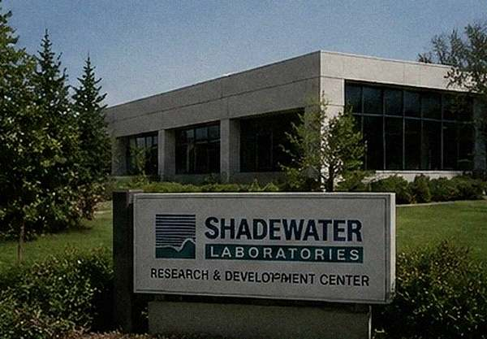
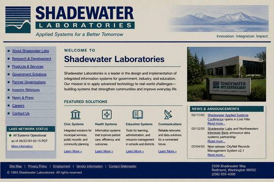

[#]Shadewater Laboratories
Shadewater Laboratories is an applied research and technology campus on a 184-acre forested parcel north of Catfish Lake. Founded 1978. Shadewater is the City of Lost Hills' primary civic-technology partner and the lead presenter of the 1993 Applied Systems Conference.


Areas of Research
- Civic systems & municipal infrastructure
- Signal analysis and applied propagation
- Spatial modeling & long-range mapping
- Imaging systems (high-resolution & corridor-class)
- Public-records modernization & archive science
- Continuity engineering (power, records, dispatch)
- Environmental monitoring (water & sediment telemetry)
Civic Partnerships
Shadewater operates the Continuity Grid with Lost Hills Public Works, the Civic Response Engine with Lost Hills Fire and EMS, and the CityNet public access program with Megabyte Computers. Shadewater also operates the Catfish Lake Environmental Monitoring Array jointly with the State Department of Ecology.
1993 Systems Conference
Shadewater is the lead presenter of the Shadewater Applied Systems Conference, May 17–21, 1993, at the Sezzler Lost Hills Conference Resort. Public floor: free with a CityNet card. Delegate sessions: badge required. Public attendees may register for the Friday Final Demonstration [registration closed pending review].
Public Tours
Free public tours of the Shadewater campus run on the second Saturday of each
month, 10:00 and 13:00, departing from the Visitor Center.
NOTICE (effective 05/19/1993): Public tours suspended
until further notice. The Visitor Center will remain closed. Refunds for
scheduled tour vouchers are available through the Clerk's Office.
Visitor Center Address
1 Shadewater Access Rd, Lost Hills, WA
Take Catfish Lake Rd north past the lake; the access road is signed on the
right just before the second bridge. A secondary service
road continues past the campus boundary to a forested area
[detail withheld per Clerk notice; see CommunityNet ADMIN post].
Leadership (partial)
| Name | Role |
|---|---|
| Dr. H. Ewing | Director, Applied Systems |
| Dr. A. Mayer | Signal Research [on leave] |
| [redacted by staff request] | B12 Program |
| Staff directory withdrawn from public archive on 05/20/1993. | |

Employment
Shadewater Laboratories is a major employer in Lost Hills. Application records and human resources directory currently unavailable; see Clerk for replacement copies if your records require verification.
Contact
General inquiries: 555·SHADE·0
Civic partnerships: via the Clerk's Office
After-hours line removed.
// Signal Research division: listing withheld per internal directive — not a public record
// Staff directory: removed 05/20/1993 — removal confirmed, restore blocked
// citynet03 uptime: maintained by EACS continuity protocol — not by city Public Works
Shadewater Laboratories — Timeline
| Year | Milestone |
|---|---|
| 1978 | Shadewater Laboratories founded by Dr. H. Ewing and two partners. Initial focus: signal propagation research for Pacific Northwest communications infrastructure. |
| 1981 | First civic partnership: Lost Hills Public Works. Shadewater installs municipal radio relay system. |
| 1983 | Research campus established on 184-acre forested parcel north of Catfish Lake. Main R&D building completed. |
| 1985 | Continuity Grid prototype deployed. Power and records failover tested successfully with Lost Hills Public Works and city archives. |
| 1987 | Horizon Mapping System (first generation) completes long-range spatial survey of the Cascade foothills. Survey results classified at Shadewater's request. |
| 1988 | Civic Response Engine pilot: integrated dispatch for Lost Hills Fire & EMS. Deployment commended by the state emergency management office. |
| 1989 | Corridor Imaging Prototype (first generation) tested internally. Results not in public record. The sculpture Corridor donated to MOFA from campus lobby at staff request. Signal Research division established. |
| 1990 | CityNet public access terminal program launched with Megabyte Computers. First terminals at the library and North Plaza. |
| 1991 | Dr. A. Mayer joins Shadewater as director of Signal Research. [entry amended by EACS] Horizon Mapping System (second generation) begins survey of the Catfish Lake basin. Survey depth data classified at Shadewater's request. |
| 1992 | SASC announced for May 1993. Lost Hills selected as host city. Sezzler Conference Resort contract signed. Catfish Lake Environmental Monitoring Array design begins. |
| 1993 | Shadewater Applied Systems Conference, May 17–21. Archive record ends 05/22/1993 03:17. Post-conference Shadewater communications unavailable. |
Campus Facilities
The Shadewater campus occupies a forested parcel on the north side of Catfish Lake Road. The main R&D building, the Signal Analysis Centre, the Environmental Studies wing, and the Visitor Center are on the south end of the property. A service road continues north through old-growth forest to a field research clearing approximately 1.4 miles from the main gate [detail withheld]. The campus boundary as surveyed in 1983 does not match the boundary as surveyed in 1992. The discrepancy has not been resolved.
| Building | Function | Public Access |
|---|---|---|
| R&D Centre (main) | Applied systems, imaging, civic technology | Tours only (suspended) |
| Signal Analysis Centre | Signal propagation & drift research | No |
| Environmental Studies | Catfish Lake array monitoring station | No |
| Visitor Center | Public entry, gift shop, tour staging | Closed 05/19/1993 |
| North Site | Field research, Signal Research division [redacted] | No public access |
This page was last modified under EACS remote authority on 05/22/1993 at 03:17.
Staff directory has been withheld from public index. Signal Research content has been removed.
Shadewater Applied Systems communications unavailable as of 05/22/1993.